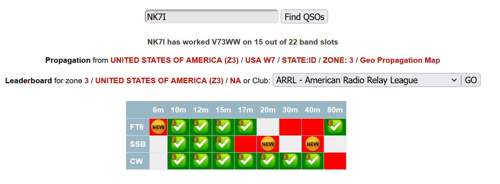
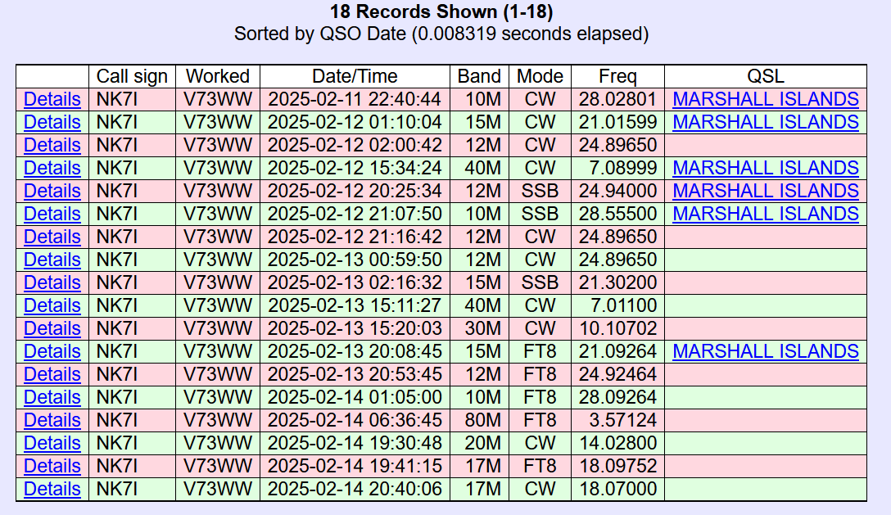

This morning I added more slots. They were confirmed in Clublog
hours ago (all in my log show confirmed on CL).
The DXPed page of Clublog later, shows that LOTW has been sent
(tiny gold L):

BUT even with LOTW latency, many have not shown up (on the LOTW
page or in the log). Six slots, have (two accidental dupes; I
wasn't caffeinated enough);

Something isn't right here; if they LOTW uploaded with the last batch (clublog shows that) and I waited most of the day; where are the confirmations? One of the missing slots, is a new slot (the other two confirmed).
I've not been on the DX side of a trip; my initial presumption is
that two uploads are required and one (LOTW) wasn't done. Since
their livestream failed utterly, my guess is that their
internet is not adequate.
Not whining, just curious. I re-uploaded my log to LOTW in case the logbook barfed, not much else I can do right now.
The team isn't doing poorly, but (as a few AF entities lately) their choice of 20M timing could be better for the west coast and PNW (I need phone and more low bands).
They also hinted that 80M and maybe top band would happen
tonight; so pay attention if you want the slots. Remember the new
Trident award all you slot hounds (not as accurate or
descriptive, but less offensive apparently 😉).
73,
Rick nk7i